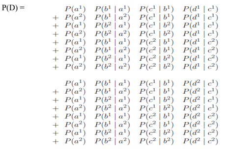

Variable Elimination Basics
Dynamic programming techniques can be used to perform inference even for certain large and complex networks in a very reasonable time.
Considering the inference task in a very simple network
A → B → C → D
We first provide a phased computation, which uses results from the previous phase for the computation in the next phase.
We then reformulate this process in terms of a global computation on the joint distribution.
Dynamic programming techniques can be used to perform inference even for certain large and complex networks in a very reasonable time.
Considering the inference task in a very simple network A → B →C → D. We first provide a phased computation, which uses results from the previous phase for the computation in the next phase.
We then reformulate this process in terms of a global computation on the joint distribution.
Assume that our first goal is to compute the probability P(B), that is, the distribution
over values b of B. Basic probabilistic reasoning (with no assumptions) gives
Each number P(a) is in the CPD for A, and each number P(b | a) is in the CPD for B.
If A has k values and B has m values, the number of basic arithmetic operations
required is O(k x m): to compute P(b), we must multiply P(b | a) with P(a) for each of
the k values of A, and then add them up, that is, k multiplications and k - 1 additions;
This process must be repeated for each of the m values b.
Similarly for C , we have
Similarly P(D) can be computed.
Consider the process of generating the entire joint and summing it out, which
requires that we generate k^n probabilities for the different events x1,..., xn.By the chain rule for Bayesian networks, the joint P(A,B,C,D) decomposes as -
To compute P(D), we need to sum together all of the entries where D = d^1 and to (separately) sum together all of the entries where D = d^2. The exact computation that needs to be performed, for binary-valued variables A,B,C,D is

Repeated terms can gain significant computational savings by computing terms once and storing them.
This procedure is said to be performing dynamic programming.
Factor Marginalization
The key operation performed when computing the probability of some subset of variables is that of marginalizing out variables from a distribution.
Let X be a set of variables, and Y ∉ X a variable. Let φ(X,Y) be a factor.
We define the factor marginalization of Y in φ , denoted ΣYφ , to be a factor ψ over X such that:
ψ(X) = ΣY φ(X,Y)
This operation is also called summing out of Y in ψ.
The process of marginalizing a joint distribution P(X,Y) onto X in a Markov network is simply summing out the variables Y in the factor corresponding to P.
We can write,